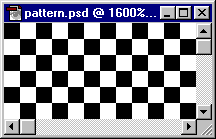
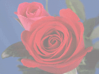
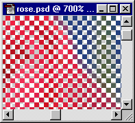

|
| ||
|
| ||
October 26, 1998
The following article was originally published in the Site Builder Network Magazine "Site Lights" column. (Now MSDN Online Voices "Design Discussion" column.)
Have you ever looked at a Web page and wondered how a particular image was created? Most Web time is spent wondering why a given image is so dang large. Or why are there so many images on that page, or why are no images or color used at all?
Some find it easier to turn off image support, and forego a painful download. Others just click onward, missing all those lovely graphics completely as they search for a page that spares them from a painful pause in their daily hyperlink adventure. Several companies today are putting the damper on the use of images to enable faster access to content.
Let's take a look at some tips that remedy those graphics-related Web maladies.
You just dialed in on your 28.8, the connection is a bit choppy, you launch the browser, and you watch that icon slowly spin in the corner as you painfully wait for 20 images to creep into view.
Less is more. Ask yourself whether you really need all those images. Start removing the large images, and reduce the size of others. Provide small thumbnails and links to larger images for those that really want to see them. Remove all superfluous images and keep only the ones you really need. In fact, the Site Builder Network team has recently been focusing on keeping the images in these articles down to a minimum. I'm pushing the image limits on this page as I speak! Their rule of thumb for images across the Site Builder Network site is to keep total file sizes (including graphics) below 100K, and to minimize horizontal scrolling at a 640x480 screen resolution. To achieve this, the team often resizes images, or crops screen shots to show only the relevant portion of the screen.
This popular trend in Web design is prevalent at the Internet Gaming Zone , where designers need to be especially conscientious about using minimal images. Users need to get through their site quickly in order to gain access to game play.
, where designers need to be especially conscientious about using minimal images. Users need to get through their site quickly in order to gain access to game play.
Designer Jeff Fong says that Zone designers use images to brand the site and to showcase screen shots from games or show game elements. To make the download as fast as possible, they try to keep pages per frame less than 30K. The limitation of images on the site does not drive its design. Producers focus on designing a fast site regardless of the limitation on image use. The real constraints come from the HTML and browser restrictions when designers strive for layout and behavior consistency between browsers.
When possible, Zone designers use text for UI elements. Ad banners are restricted to 10K. Photographs are rarely used because of the nature of the site. Screen shots and images from games are restricted to a limited size range. Scott Tomlin, the Web development lead, uses Cascading Style Sheets (CSS), background colors, and images throughout the site. CSS implementation is helped by the fact that the Internet Gaming Zone currently supports only Netscape 4.x and Internet Explorer versions 3. x and 4.0. Says Jeff Fong, "In the future, we are looking at supporting more browsers and removing framesets, which will affect the design of the site dramatically."
It is important to remember to add the ALT tag information to all your images, especially those images used for navigation. Otherwise, if users turn images off in the browser, they will not know where to go.
A rare occasion, but sometimes you don't have enough images to keep your cyber boat afloat. In fact, all you have is your company logo, a couple pictures of your dog, and a Maybe a few graphical buttons. You are chartered to create a Web site for your company by the end of next week. How can you get more images out of what you have?
In this case, clip-art sites and a digital camera May become your best friends. Or you can try a "many from one" remedy that works well for any browser that supports table-cell background colors or background colors in <DIV>s and <SPAN>s. This technique uses the transparent GIF 89A-file format to create the illusion of several different toned images from one image. You can use either photographs or graphics. Simply make every other pixel of the image transparent, and let the color of the table cells, <DIV>s, or <SPAN>s shine through. I found this technique most easy to create using Adobe Photoshop™ 4.0 and 5.0, because the process requires intricate similar-color selections.
and a digital camera May become your best friends. Or you can try a "many from one" remedy that works well for any browser that supports table-cell background colors or background colors in <DIV>s and <SPAN>s. This technique uses the transparent GIF 89A-file format to create the illusion of several different toned images from one image. You can use either photographs or graphics. Simply make every other pixel of the image transparent, and let the color of the table cells, <DIV>s, or <SPAN>s shine through. I found this technique most easy to create using Adobe Photoshop™ 4.0 and 5.0, because the process requires intricate similar-color selections.

Or you can download a zipped version of the grid pattern in PSD format.

Close up, it looks like this:

Now the image is ready to use inside table cells filled with different colors, or even different color pages, to create the illusion that the single image is more than one image. Visit the final HTML page, which shows one picture as many.
Another solution is to take advantage of fonts and CSS-layout capabilities to create the illusion of graphics. For example, you can download one of the core Web fonts, such as Webdings, and create some interesting Web designs purely with typography. Or you can use Webdings to create graphics as well. I did this earlier this year in my column To <DIV> or to <SPAN>? That is the Question. The Webdings font was designed in 1997 as a collaborative work between Microsoft's Vincent Connare and top Monotype designers Sue Lightfoot, Ian Patterson, and Geraldine Wade. The images included in this font are intended for Web designers who wish to include live fonts as a fast way of rendering graphics. Font embedding technology is another alternative to delivering various graphical glyphs to your viewers. Visit the Microsoft Typography site  to learn more about font embedding and the free TrueType core fonts available for the Web.
to learn more about font embedding and the free TrueType core fonts available for the Web.
You enter a page that looks like Las Vegas on steroids. A queasy feeling takes over as your eyes gyrate from blinking icons to swirling text.
Animated GIFs are great if used in moderation. En masse, they can be a visual nightmare. If animated GIFs are slow to repeat or don't repeat whatsoever, they can be more effective. Following the "less is more" motto here also will prevent your visitors from reaching for the Dramamine™.
Nadja Vol Ochs is the design consultant in Microsoft's Developer Relations Group.
Photo Credit: Russell Illig/PhotoDisc; Neil Beer/PhotoDisc
Did you find this material useful? Gripes? Compliments? Suggestions for other articles? Write us!
© 1999 Microsoft Corporation. All rights reserved. Terms of use.